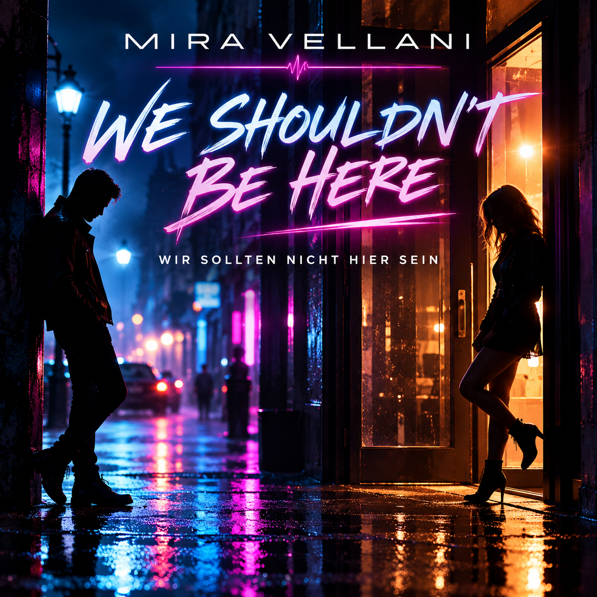
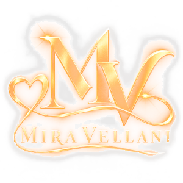
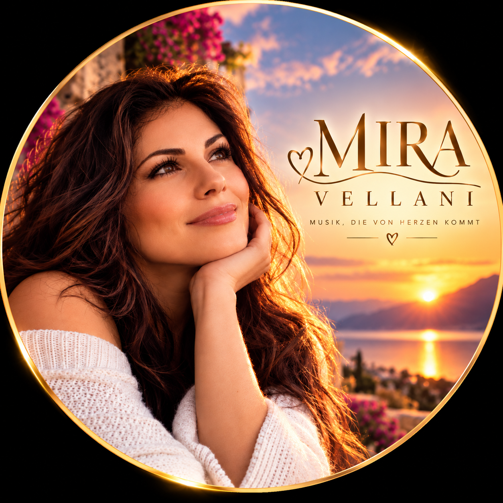

AKTUELLE EP · 7 TRACKS
WE SHOULDN'T BE HERE
Englisch und Deutsch, alternative Fassungen, Video Edit, Orchestral Version und ein algerischer Bonus Track.
EP auf Suno öffnen ↗
MIRA VELLANIOFFICIAL MUSIC WIKIITALO DISCO · 80s SYNTHPOP · EURODANCE
A voice between
memory and tomorrow
Warme Horizonte. Leuchtende Synths.
Musik für das, was bleibt.
Every song tells a story.
Every story deserves to be felt.
01 / ABOUT MIRA
Mira Vellani ist eine virtuelle KI-Künstlerin.
Ihr musikalischer Kosmos verbindet Italo Disco, 80s Synthpop und Eurodance. Zwischen nostalgischem Synthesizerlicht und mediterraner Abendstimmung steht die Musik im Mittelpunkt.
Dieses Wiki sammelt ihre Musik und die dazu bestätigten Informationen. Mira ist eine künstlerische, mit KI gestaltete Identität; die Darstellung beschreibt keine reale Sängerin.
02 / DISKOGRAFIE
Eine EP. Sieben Tracks.
Die finale Trackliste von Mira Vellani.

AKTUELLE EP · 7 TRACKS
Englisch und Deutsch, alternative Fassungen, Video Edit, Orchestral Version und ein algerischer Bonus Track.
EP auf Suno öffnen ↗03 / DIE KOMPLETTE EP
Alle sieben Tracks direkt anhören. Beim Laden der externen Player wird eine Verbindung zu Suno hergestellt. Falls ein Player nicht lädt, nutze den jeweiligen Songlink.
MIRA VELLANI · WE SHOULDN'T BE HERE
MIRA VELLANI · WE SHOULDN'T BE HERE
MIRA VELLANI · WE SHOULDN'T BE HERE
MIRA VELLANI · WE SHOULDN'T BE HERE
MIRA VELLANI · WE SHOULDN'T BE HERE
MIRA VELLANI · WE SHOULDN'T BE HERE
MIRA VELLANI · WE SHOULDN'T BE HERE
04 / VISUELLE WELT
Offizielle Porträts, Musikvisuals und die goldene Signatur von Mira Vellani.

Vom Projekt bereitgestellte Originalmotive der virtuellen KI-Künstlerin Mira Vellani. Alle Bilder lassen sich in voller Größe öffnen.
05 / STAY CONNECTED
Die Geschichte
Mira Vellani auf Suno ↗geht weiter.
Weitere offizielle Kontakte werden nach Bestätigung ergänzt.